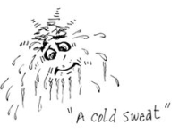
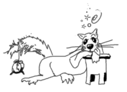

This page has usage examples for the following words:

heart beat 心拍 しんぱく
irregular pulse 脈拍の乱れ みゃくはくのみだれ
I've had some irregular heartbeats.
脈に乱れがあります。
みゃくに みだれがあります。
When did you first notice an irregular heartbeat?
脈の乱れに、最初に気づいたのは、いつですか。
みゃくのみだれに、さいしょにきづいたのは、いつですか。
Do they last long or only for a short time?
長く続きますか、それとも、ほんの短い間ですか。
ながくつづきますか、それとも、ほんのみじかいあいだですか。
I noticed it when I lay down at night.
夜、就寝時に気が付きます。
よる、しゅうしんじに きがつきます。
I felt my chest pounding when I drive on the freeway.
フリー・ウェイで車を運転している時、胸がドキドキしました。
フリー・ウェイで くるまをうんてんしているとき、むねがドキドキしました。
Do you take any medication regularly?
薬を何か常用していますか。
くすりを なにかじょうようしていますか。
Yes, I've been taking thyroid medicine everyday for a few years.
ここ数年、甲状腺の薬を毎日飲んでいます。
ここすうねん、こうじょうせんのくすりを まいにちのんでいます。
Do you feel any chest pains when you have irregular heartbeats
脈の乱れとともに、胸の痛みがありましたか。
みゃくのみだれとともに、むねのいたみがありましたか。
A conversation between a patient and a doctor about irregular pulse
Patient:
There are times when I suddenly feel palpitation or have arrhythmia, making me nervous. If it happens at night when everything is quiet, I can’t sleep because of worries. What causes irregular heartbeats?
激しい運動中でもないのに、急に胸がドキドキしたり、心拍数が乱れて、「おやっ！」と、不安になる時があります。特に夜間、まわりが静かになると余計に気になり寝付かれないと云う事もあります。原因があるとすると、どこから来るのですか？
Doctor:
We become conscious of respiration and heartbeat only when there are some abnormalities. Statistically, it is said that one in every 5 healthy male adults experiences abnormal heartbeats at least once a day. While heartbeat is controlled by the conduction system in the heart, any of the following contributes to the mechanism of arrhythmia (irregular heartbeats); the autonomic nervous system, neuroendocrine system, myocardial ischemia, drugs and hemodynamic stresses. For those people who’ve been taking drugs for thyroid disease, diabetes mellitus or asthma, it is important to follow the physician’s instructions. If you have experienced arrhythmia, it is recommended to consult a cardiologist.
呼吸や脈拍は、何か異常があって初めて意識にのぼるものです。統計的には健康な成人男子の５人に１人は、少なくとも、一日に一回は心拍の異常を経験すると言われています。心拍数をつかさどるのは心臓の伝導系ですが、不整脈（心拍数の乱れ）の発生には自律神経系、神経内分泌系、心筋虚血、薬物、循環動態ストレスなどが複雑にからんでいます。甲状腺の病気、糖尿病、喘息などで、長期にわたって薬を服用している方は、医師の指示に従うことが肝要です。不整脈の自覚があれば、ともかく、心臓専門医に診てもらうことが重要です。
My two cents 一言おせっかい
When we encounter things unexpectedly and are startled, it is expressed “My heart skipped a beat.”
For the purpose of finding accurately how arrhythmias occur, patients are told to wear the Holter EKG for 24 hours. The device processes electronically various information concerning heartbeats. “Seeing is believing.”
思いがけない事に出会って「あーっ、驚いた！」と、胸がドキッとする時の表現として、"My heart missed a beat." 「脈が飛んだ」と云うのがあります。
不整脈の起こり方を正確に知る目的で、電池付きの心電図計（Holter EKG）を２４時間携帯するように指示されることがあります。一日の総脈拍数を含めて、あらゆる情報がコンピューターで処理されます。百聞は一見にしかずと云う訳です。 Seeing is believing.

[shi05]
| © 1995-2013 NACOS International Institute. All Rights Reserved. |